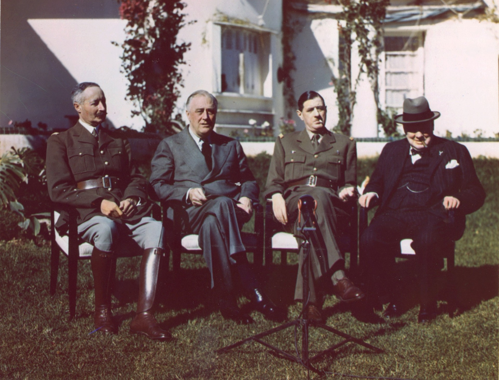
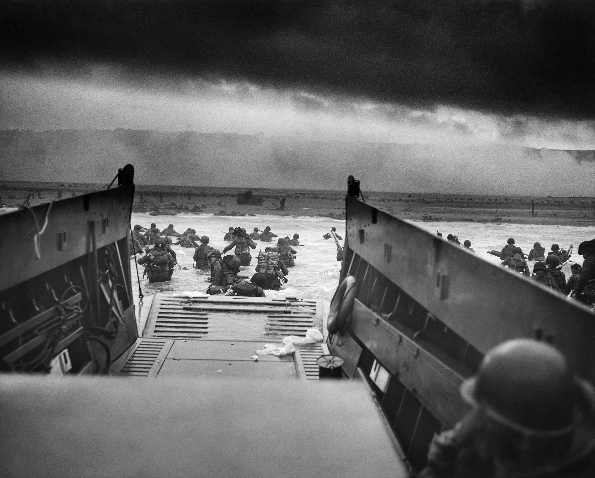

The War
Important Conferences
Casablanca Conference (January 14-24, 1943) This conference involved two of the “Big 3.” FDR and Churchill at Casablanca agreed on the strategy to win the war. The plan included invading Sicily, then Italy. After Italy, the Allies planned to invade France and increase bombing campaigns on Germany. The final term of Casablanca was “unconditional surrender” for the Axis Powers. Casablanca set the outline for victory in Europe.
Tehran Conference (November 28- December 1, 1943) Tehran involved all three members—Churchill, Roosevelt, and Stalin. They agreed that the British and Americans would begin their drive into France in Spring 1944. Stalin and the Soviet Union would join the war after Germany’s unconditional surrender. This conference also planned the D-Day invasion.

Financing the War / The Economy
The War Production Board (WPB) managed war industries starting in 1942, similar to WWI federal agencies. Government spending increased by 1,000% between 1939 and 1945. World War II helped the U.S. spend its way out of the Depression, which the New Deal had not fully achieved. The gross national product increased by 15% or more per year. By the end of the war, the U.S. faced $250 billion in debt.
Business and industry thrived during this time. The Depression ended as unemployment dropped dramatically. U.S. industries exceeded their production and profits of the 1920s. War-related industries produced massive output: 300,000 planes, 100,000 tanks, and 53 million tons of ships. This was twice the production of all three Axis Powers combined. Smaller businesses lost out on government contracts to larger corporations. The 100 largest corporations accounted for about 70% of wartime production.
To fund government spending, income taxes increased and war bonds were sold. Workers’ union rights were limited. Labor unions and large corporations banned strikes, and the Smith Connally Act allowed the government to take over war-related businesses that threatened strikes.
The war changed the lives of women. Women joined the military in non-combat roles and entered the workforce while most men fought abroad. Almost 5 million women entered factories. African Americans migrated north and west for jobs. American Indians and Mexican Americans also contributed to the war effort, working together in combat or the workforce to reduce prejudices.
From North Africa to D-Day
With Operation Torch, the Allies began driving German forces out of North Africa. Starting in November 1942, forces led by General Eisenhower (U.S.) and General Bernard Montgomery (Britain) took North Africa by May 1943.
Next was Sicily, near Italy, as preparation for invading Italy. By the time the Allies reached Italy, Mussolini had fallen. Italy surrendered, and Germany took control of much of Northern Italy until its surrender in 1945.
The final step toward German surrender was liberating France, beginning on June 6, 1944, D-Day. British, Canadian, and U.S. forces led by Eisenhower secured beachheads in Normandy. Many soldiers died, but the Allies continued pushing German forces back. They crossed into Germany for the final push to Berlin by September 1944. The Nazis launched a desperate counterattack in the Battle of the Bulge, but the Allies regrouped and advanced into German territory.

V-E Day
The Germans realized the war’s end was near. Hitler committed suicide on April 30, 1945. A week later, the Nazis surrendered on May 7, 1945. V-E Day, May 8, 1945, marks the official end of the war in Europe. Americans and people worldwide celebrated. As U.S. forces advanced, they discovered concentration camps, revealing the Holocaust and the murder of 6 million Jews and several million non-Jews.
More Conferences / FDR’s Death
Yalta Conference (February 1945) The Big 3 met again at Yalta, a Soviet resort on the Black Sea. After victory in Europe, they agreed to divide Germany into four occupation zones among the U.S., Britain, Russia, and France. Yalta also planned the first meeting of the United Nations in San Francisco in spring 1945.
FDR’s Death After returning from Yalta, FDR died suddenly in Georgia on April 12, 1945. His death shocked the nation. Truman assumed the role of Commander in Chief during an ongoing war.
Potsdam (July 17 - August 2, 1945) At Potsdam, only Stalin remained of the Big 3. Churchill lost his election and was replaced by Clement Attlee. Truman, Stalin, and Attlee demanded Japan’s unconditional surrender and planned war-crime trials for Nazi leaders.
War in the Pacific
In the Pacific, U.S. forces primarily challenged Japan. By 1942, Japan occupied much of East and Southeast Asia. The U.S. intercepted and decoded Japanese communications, helping destroy four carriers and 300 planes at the Battle of Midway (June 4-7). Midway ended Japanese expansion. The U.S. then began “Island Hopping” to occupy strategic Pacific positions, moving steadily toward Japan.
Early in 1942, Japan conquered the Philippines. Eisenhower vowed to return. The battle to retake the Philippines included the largest naval battle in history, the Battle of Leyte Gulf. By October 1944, Japan’s navy was destroyed. Kamikaze pilots attacked U.S. ships during the Battle of Okinawa, causing major damage. Before securing the island, U.S. forces suffered 50,000 casualties and killed 100,000 Japanese.
Atomic Bomb / Japanese Surrender
The U.S. developed a destructive weapon through the Manhattan Project, led by physicist J. Robert Oppenheimer. Over 100,000 people worked on the project, spending $2 billion to develop the A-Bomb. The bomb was tested at Alamogordo, New Mexico in the Trinity Test. President Truman demanded Japan’s unconditional surrender or “utter destruction.” Japan initially resisted. On August 6, an A-Bomb was dropped on Hiroshima and on August 9 on Nagasaki, causing 250,000 deaths.
Japan agreed to surrender a week later, retaining the emperor as head of state. On the USS Missouri, General Douglas MacArthur accepted Japan’s formal surrender on September 2, 1945, in Tokyo Bay.
V-J Day
Victory in Japan Day, September 2, 1945, marked the end of the four-year Pacific conflict. Millions celebrated as the Allied nations gained relief and peace.